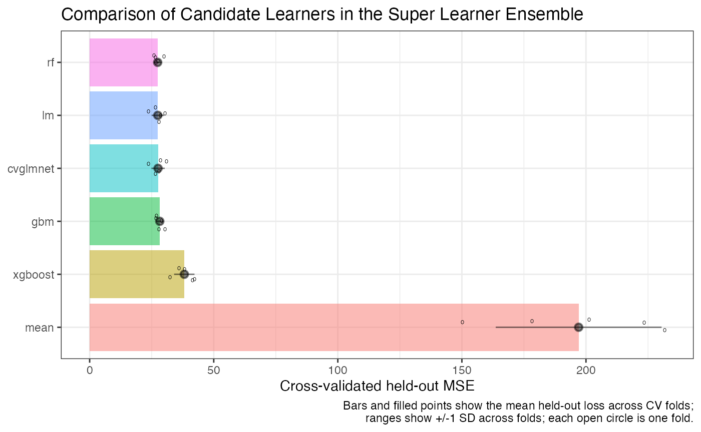
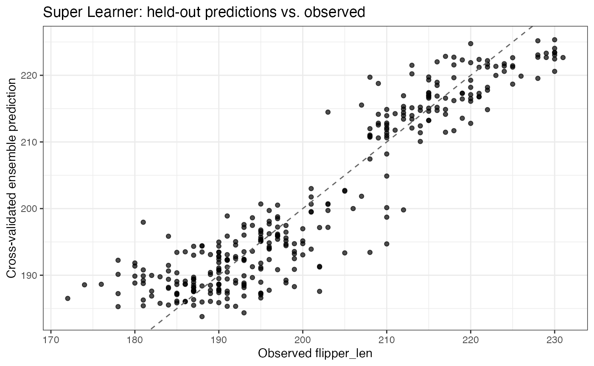

Let’s start with an extremely simple example: a prediction problem on a continuous outcome, where we want to use cross-validation to minimize the expected risk/loss on held out data across a few different models.
We’ll use the penguins dataset to do this.
nadir::super_learner() strives to keep the syntax
simple, so the simplest call to super_learner() might look
something like this:
library(dplyr)
#>
#> Attaching package: 'dplyr'
#> The following objects are masked from 'package:stats':
#>
#> filter, lag
#> The following objects are masked from 'package:base':
#>
#> intersect, setdiff, setequal, union
penguins <- penguins[complete.cases(penguins), ]
sl <- super_learner(
data = penguins,
formula = flipper_len ~ bill_dep + bill_len + species + body_mass,
learners = list(
lnr_lm,
lnr_earth,
lnr_mean,
lnr_rf,
lnr_xgboost,
lnr_cvglmnet,
lnr_gbm
)
)
#> Warning: package 'future' was built under R version 4.5.2
sl
#>
#> Super Learner (nadir_sl_model)
#> outcome: flipper_len (continuous)
#> observations: 333 CV folds: 5
#> ensemble weights:
#> lm 0.327
#> rf 0.285
#> gbm 0.284
#> xgboost 0.103
#> earth 0.000
#> mean 0.000
#> cvglmnet 0.000
#> captured conditions (see $errors_from_*, $warnings_from_*):
#> [warning] cvglmnet @ cv-training: variable 'island' is not a factor (x5)
#> [warning] cvglmnet @ cv-training: variable 'sex' is not a factor (x5)
#> [warning] cvglmnet @ cv-prediction: variable 'island' is not a factor (x5)
#> [warning] cvglmnet @ cv-prediction: variable 'sex' is not a factor (x5)
#> ... and 2 more unique conditions not shown
#>
#> Methods: predict(x, newdata), plot(x), summary(x), coef(x), fitted(x), ...Notice what it returns: A function of newdata that
predicts across the learners, sums up according to the learned weights,
and returns the ensemble predictions.
We can store that learned predictor function and use it:
# We recommend storing the list of learners and formulas to simplify
# calls to super_learner()
penguins_formula <- flipper_len ~ bill_dep + bill_len + species + body_mass
learners <- list(
lnr_lm,
lnr_mean,
lnr_rf,
lnr_xgboost,
lnr_cvglmnet,
lnr_gbm
)
sl <- super_learner(
data = penguins,
formula = penguins_formula,
learners = learners
)
plot(sl)
plot(sl, type = "fitted")
In particular, we can use it to predict on the same dataset,
predict(sl, penguins) |> head()
#> Warning in model.frame.default(object, data, xlev = xlev): variable 'island' is
#> not a factor
#> Warning in model.frame.default(object, data, xlev = xlev): variable 'sex' is
#> not a factor
#> 1 2 3 5 6 7
#> 188.8140 188.8211 188.0311 188.8123 190.8106 188.1114
# equivalently, predict(sl) |> head()On a random sample of it,
predict(sl, penguins[sample.int(size = 10, n = nrow(penguins)), ]) |>
head()
#> Warning in model.frame.default(object, data, xlev = xlev): variable 'island' is
#> not a factor
#> Warning in model.frame.default(object, data, xlev = xlev): variable 'sex' is
#> not a factor
#> 124 144 327 243 63 95
#> 192.1971 189.3745 193.6655 216.5995 187.8116 187.3326Or on completely new data.
fake_penguins_data <- penguins[1:10, ]
fake_penguins_data$flipper_len <- rnorm(n = 10)
fake_penguins_data$bill_len <- rexp(n = 10)
predict(sl, fake_penguins_data) |> head()
#> Warning in model.frame.default(object, data, xlev = xlev): variable 'island' is
#> not a factor
#> Warning in model.frame.default(object, data, xlev = xlev): variable 'sex' is
#> not a factor
#> 1 2 3 5 6 7
#> 182.7282 182.6414 181.0714 182.8823 184.8192 183.3490Getting More Information Out
If we want to know a lot more about the super_learner()
process, how it weighted the candidate learners, what the candidate
learners predicted on the held-out data, etc., then we will want to look
at the other metadata contained in the nadir_sl_model
object produced: option.
sl
#>
#> Super Learner (nadir_sl_model)
#> outcome: flipper_len (continuous)
#> observations: 333 CV folds: 5
#> ensemble weights:
#> lm 0.412
#> rf 0.392
#> gbm 0.196
#> mean 0.000
#> xgboost 0.000
#> cvglmnet 0.000
#> captured conditions (see $errors_from_*, $warnings_from_*):
#> [warning] cvglmnet @ cv-training: variable 'island' is not a factor (x5)
#> [warning] cvglmnet @ cv-training: variable 'sex' is not a factor (x5)
#> [warning] cvglmnet @ cv-prediction: variable 'island' is not a factor (x5)
#> [warning] cvglmnet @ cv-prediction: variable 'sex' is not a factor (x5)
#> ... and 2 more unique conditions not shown
#>
#> Methods: predict(x, newdata), plot(x), summary(x), coef(x), fitted(x), ...
summary(sl)
#> Summary of Super Learner fit
#> outcome: flipper_len (continuous); n = 333; folds = 5
#>
#> learner weight cv_holdout_loss
#> rf 0.3917 27.41
#> lm 0.4119 27.48
#> cvglmnet 0.0000 27.58
#> gbm 0.1963 28.26
#> xgboost 0.0000 38.12
#> mean 0.0000 196.90
#>
#> Loss is evaluated on held-out (cross-validation) data; lower is better.
nobs(sl)
#> [1] 333
sl$holdout_predictions |>
head() |>
knitr::kable()| .sl_fold | lm | mean | rf | xgboost | cvglmnet | gbm | flipper_len | .sl_rowid |
|---|---|---|---|---|---|---|---|---|
| 1 | 189.6357 | 200.6504 | 189.0628 | 187.8862 | 189.9718 | 188.6785 | 181 | 6 |
| 1 | 194.9432 | 200.6504 | 193.2039 | 198.0939 | 193.7386 | 195.8220 | 198 | 10 |
| 1 | 189.6532 | 200.6504 | 188.8981 | 189.8960 | 189.4205 | 187.5981 | 195 | 12 |
| 1 | 186.7424 | 200.6504 | 189.1396 | 190.8266 | 186.3687 | 188.5648 | 184 | 14 |
| 1 | 188.4184 | 200.6504 | 189.0952 | 188.9931 | 188.3915 | 187.7907 | 174 | 16 |
| 1 | 189.8007 | 200.6504 | 188.1753 | 187.8717 | 189.6508 | 188.0629 | 180 | 17 |
sl_model_penguins <- super_learner(
data = penguins,
formula = penguins_formula,
learners = learners
)
str(sl_model_penguins, max.level = 1)
#> List of 21
#> $ predict :function (newdata)
#> ..- attr(*, "srcref")= 'srcref' int [1:8] 1022 41 1038 5 41 5 8228 8244
#> .. ..- attr(*, "srcfile")=Classes 'srcfilealias', 'srcfile' <environment: 0x10c454438>
#> $ y_variable : chr "flipper_len"
#> $ fit_learners :List of 6
#> $ train_on_whole_dataset : logi TRUE
#> $ outcome_type : chr "continuous"
#> $ learner_weights : Named num [1:6] 0.291 0 0.508 0 0 ...
#> ..- attr(*, "names")= chr [1:6] "lm" "mean" "rf" "xgboost" ...
#> $ holdout_predictions : tibble [333 × 9] (S3: tbl_df/tbl/data.frame)
#> $ formulas :List of 6
#> $ n_folds : int 5
#> $ n_obs : int 333
#> $ oof_predictions : num [1:333] 190 189 188 188 191 ...
#> $ oof_predict :function (newdata = NULL, rowids = NULL)
#> ..- attr(*, "srcref")= 'srcref' int [1:8] 1210 18 1275 3 18 3 8416 8481
#> .. ..- attr(*, "srcfile")=Classes 'srcfilealias', 'srcfile' <environment: 0x10c454438>
#> $ oof_predict_fold :function (newdata_list = NULL, modify = NULL)
#> ..- attr(*, "srcref")= 'srcref' int [1:8] 1138 23 1160 3 23 3 8344 8366
#> .. ..- attr(*, "srcfile")=Classes 'srcfilealias', 'srcfile' <environment: 0x10c454438>
#> $ oof_predict_modified :function (modify = NULL)
#> ..- attr(*, "srcref")= 'srcref' int [1:8] 1284 27 1294 3 27 3 8490 8500
#> .. ..- attr(*, "srcfile")=Classes 'srcfilealias', 'srcfile' <environment: 0x10c454438>
#> $ fold_assignments : int [1:333] 3 3 2 2 5 4 2 3 4 2 ...
#> $ rowids : int [1:333] 1 2 3 4 5 6 7 8 9 10 ...
#> $ training_data :'data.frame': 333 obs. of 8 variables:
#> $ warnings_from_training_cv_stage1 :List of 10
#> $ warnings_from_predicting_cv_stage2 :List of 10
#> $ warnings_from_training_on_entire_data:List of 2
#> $ warning_learners : chr "cvglmnet"
#> - attr(*, "class")= chr "nadir_sl_model"To put some description to what’s contained in the output from
super_learner():
- A prediction function,
$predict()that takesnewdata - Each of the fit learners as prediction functions: a list of
functions
$fit_learnerswhich also takenewdata. - Some character fields like
$y_variableand$outcome_typeto provide some context to the learning task that was performed. -
$learner_weightsthat indicate what weight the different candidate learners were given -
$holdout_predictions: A data.frame of predictions from each of the candidate learners, along with the actual outcome from the held-out data.
We can call compare_learners() on the verbose output
from super_learner() if we want to assess how the different
learners performed. We can also call cv_super_learner()
with the same arguments as super_learner() to wrap the
super_learner() call in another layer of cross-validation
to assess how super_learner() performs on held-out
data.
compare_learners(sl)
#> Inferring the loss metric for learner comparison based on the outcome type:
#> outcome_type=continuous -> using mean squared error
#> # A tibble: 1 × 6
#> lm mean rf xgboost cvglmnet gbm
#> <dbl> <dbl> <dbl> <dbl> <dbl> <dbl>
#> 1 27.5 197. 27.4 38.1 27.6 28.3
cv_sl <- cv_super_learner(
data = penguins,
formula = penguins_formula,
learners = learners
)
#> The loss_metric is being inferred based on the outcome_type=continuous -> using CV-MSE
cv_sl
#> Cross-validated Super Learner (nadir_cv_sl)
#> outcome: flipper_len (continuous)
#> outer folds: 5 inner CV folds: 5
#> cross-validated loss on held-out data: 26.906
#> note: warnings were captured during training from: cvglmnet
#> see $warnings_from_inner_super_learners
#> Methods: $cv_trained_learners, $cv_loss, $crossfit
cv_sl$cv_loss
#> [1] 26.90558We can, of course, do anything with a super learned model that we would do with a conventional prediction model, like calculating performance statistics like .
var_residuals <- var(penguins$flipper_len - predict(sl, penguins))
#> Warning in model.frame.default(object, data, xlev = xlev): variable 'island' is
#> not a factor
#> Warning in model.frame.default(object, data, xlev = xlev): variable 'sex' is
#> not a factor
total_variance <- var(penguins$flipper_len)
variance_explained <- total_variance - var_residuals
rsquared <- variance_explained / total_variance
print(rsquared)
#> [1] 0.8958891In the causal inference literature, there is a commonly used way to avoid restrictive Donsker conditions on model complexity, and that is to use something that is known as crossfitting. We provide a crossfit super learner implementation as well.
cf <- crossfit_super_learner(
data = penguins,
learners = learners,
formula = penguins_formula
)
cf
#> Cross-fitted Super Learner (nadir_crossfit_sl)
#> outcome: flipper_len (continuous)
#> outer folds: 5 inner CV folds: 5
#> observations: 333
#> cross-fitted loss on held-out data: 27.194
#> note: warnings were captured during cross-fitting from: cvglmnet
#> see $warnings_from_inner_super_learners and $warnings_from_fold_predictions
#> Access: $oof_predict(data), $oof_predictions, $oof_predict_modified(modify), $oof_predict_fold(newdata_list),
#> $sl_fits, $training_data, $fold_assignments, $cv_loss
summary(cf)
#> Summary of Cross-fitted Super Learner
#> outcome: flipper_len (continuous); n = 333
#> outer folds: 5; inner CV folds: 5
#>
#> Held-out loss by outer fold:
#> fold n_validation loss
#> 1 67 30.93
#> 2 66 22.74
#> 3 67 22.20
#> 4 67 29.54
#> 5 66 30.55
#> Overall cross-fitted loss: 27.19
#>
#> Ensemble weight stability across outer folds:
#> learner mean_weight sd_weight min_weight max_weight n_folds_present
#> lm 0.3745 0.2337 0.0000 0.5729 5
#> rf 0.2840 0.2312 0.0000 0.6142 5
#> gbm 0.2362 0.0958 0.0888 0.3233 5
#> xgboost 0.0565 0.0809 0.0000 0.1745 5
#> cvglmnet 0.0484 0.1083 0.0000 0.2422 5
#> mean 0.0003 0.0006 0.0000 0.0014 5Find more examples and documentation on the nadir website: https://ctesta01.github.io/nadir/